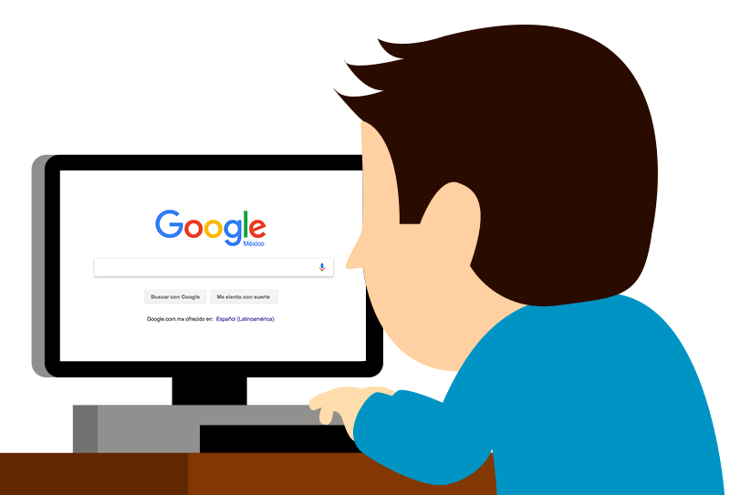
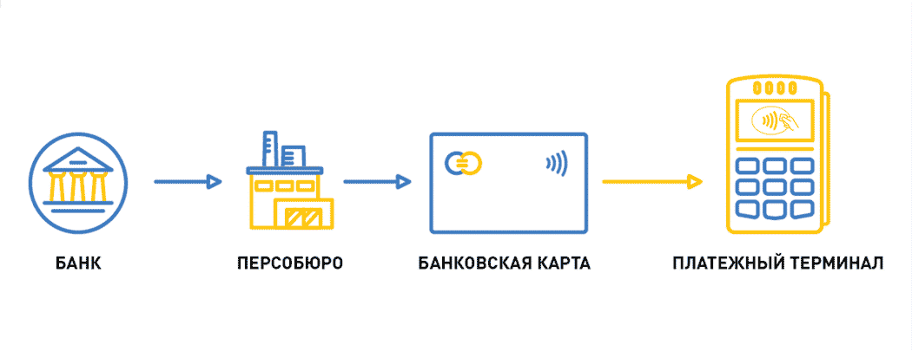

Итак, каковы лучшие методы защиты в интернете? Ниже приведены рекомендации по защите от угроз интернет-безопасности и различных типов интернет-атак.
Программное решение, обеспечивающее круглосуточную интернет-безопасность Лучшее программное обеспечение для интернет-безопасности защищает от целого ряда угроз, включая взломы, вирусы и вредоносные программы. Комплексный продукт безопасности в интернете должен обнаруживать уязвимости устройств, блокировать киберугрозы до момента их распространения, и устранять непосредственные опасности.Здесь вы можете найти подходящий
Блокировка доступа к веб-камере для конфиденциальности в интернете
В результате взлома злоумышленники получают доступ к камере вашего мобильного телефона или компьютера и записывают ваши действия. Это называется “camfecting”. Количество зарегистрированных атак этого типа относительно невелико, хотя в большинстве случаев жертвы не знают что их камеры подверглись взлому. Самый простой способ заблокировать доступ к веб-камере – использовать клейкую ленту. Однако это невозможно, если регулярно приходится использовать видеоконференции для работы и для общения. Гораздо эффективнее использовать антивирус, обеспечивающий защиту веб-камеры.(Антивирус Касперский)
Блокировщики, защищающие от вредоносной рекламы
Блокировщики рекламы убирают рекламу с веб-страниц. При блокировке рекламы исчезает риск просмотра и перехода на вредоносную рекламу. У блокировщиков рекламы есть и другие преимущества. Например, они снижают количество файлов cookie, хранящихся на компьютере, повышают конфиденциальность в интернете благодаря сокращению отслеживания, экономят трафик, обеспечивают более быструю загрузку страниц и увеличивают продолжительность работы батареи мобильных устройств.
Родительский контроль для безопасности детей
Родительский контроль – это набор настроек, позволяющих контролировать контент, доступный вашему ребенку в интернете. Родительский контроль, используемый совместно с настройками конфиденциальности, повышает безопасность детей в интернете. Настройка родительского контроля зависит от платформы и устройства. На сайте организации Internet Matters приведены пошаговые инструкции по настройке для каждой платформы. Можно также использовать приложение для родительского контроля, например, Kaspersky Safe Kids.

Очистка компьютера
Очистка компьютера – это инструмент для удаления ненужных и временных файлов и программ из системы. В антивирусах часто предусмотрена функция очистки компьютера, позволяющая находить и удалять редко используемые или установленные без вашего согласия приложения и браузерные расширения.
Кроссплатформенная защита
Интернет-защита должна распространяться на все устройства, используемые для выхода в Интернет: ноутбуки, компьютеры, смартфоны и планшеты. Лучшие программы интернет-безопасности можно установить на несколько устройств, что обеспечит кроссплатформенную защиту от угроз интернет-безопасности.
Безопасный онлайн-банкинг и онлайн-шоппинг
Рекомендации по безопасности при онлайн-шоппинге:
🛍 Убедитесь, что вы совершаете транзакции на защищенном веб-сайте. Его веб-адрес должен начинаться с https://, а не с http://; буква s означает «безопасный» и указывает на наличие у сайта сертификата безопасности. Слева от адресной строки также должен отображаться значок замка;
🛍 Обращайте внимание на веб-адрес сайта. Злоумышленники могут создавать поддельные сайты с веб-адресами, аналогичными настоящим. Они часто меняют несколько буквы в веб-адресе, чтобы ввести пользователей в заблуждение;
🛍 Избегайте предоставления финансовой информации при использовании публичных сетей Wi-Fi.
Рекомендации по безопасности при онлайн-банкинге:🛍 Аналогично онлайн-шоппингу, избегайте предоставления финансовой и личной информации при использовании публичных сетей Wi-Fi;
🛍 Используйте надежные пароли и регулярно меняйте их;
🛍 По возможности используйте многофакторную аутентификацию;
🛍 Чтобы не стать жертвой фишингового мошенничества, вводите веб-адрес банка напрямую или используйте банковское приложение, но не переходите по ссылкам в сообщениях электронной почты;
🛍 Регулярно проверяйте выписки по банковским счетам, чтобы выявить непонятные транзакции;
🛍 Поддерживайте операционную систему, браузер и приложения в актуальном состоянии. Это гарантирует, что в них исправлены известные уязвимости;
🛍 Используйте надежные решения для обеспечения интернет-безопасности.
В мире, где большая часть жизни проходит онлайн, безопасность в интернете очень важна. Понимание того, как преодолевать угрозы интернет-безопасности и противостоять различным типам интернет-атак, является ключом к обеспечению безопасности и защите данных в интернете.